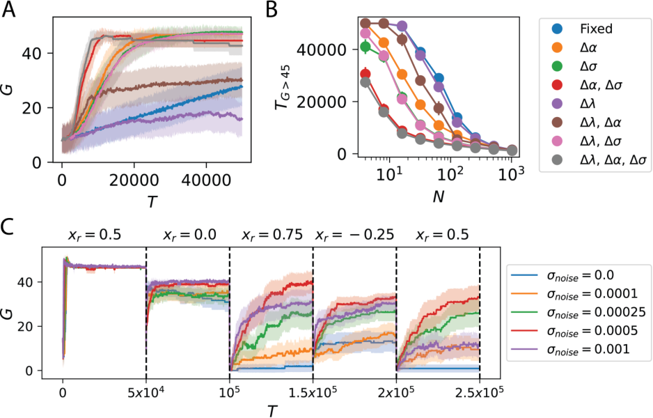
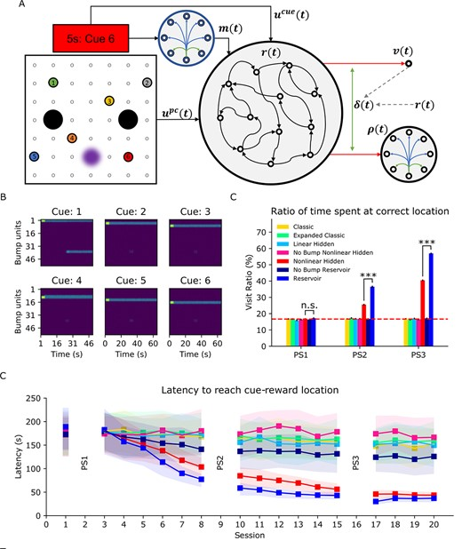

I am a computational neuroscientist studying how biological systems learn models of the world and use them for flexible decision-making under uncertainty. My research pursues three connected goals: (i) characterising the neural computations that underlie learning in the brain through theory-driven modelling, yet grounded in experimental data (ii) evaluating these computational principles using artificial systems to improve their scalability and sample-efficiency (iii) developing mechanistic hypotheses about how disruptions during learning contributes to psychopathology, with the aim of informing targeted interventions. I hope this work ultimately improves the quality of life of people around me.
News
Experience
- 2026 – Present Postdoctoral Fellow · Max Planck Institute for Biological CyberneticsAdvisor: Peter Dayan
- 2023 – 2025 Postdoctoral Fellow · Harvard University SEASAdvisor: Cengiz Pehlevan
- 2022 – 2023 Research Scientist I · CFAR, A*STAR
- 2019 – 2024 Co-Founder & Principal Scientist · Nugen.ai
- 2017 – 2018 Research Engineer · AI Initiative, A*STAR
Education
- Ph.D. 2023 Computational Neuroscience · National University of SingaporeAdvisor: Andrew Tan · Biologically Plausible Computations Underlying One-Shot Learning of Paired Associations
- B.Sc. 2017 Life Sciences (Hons. Distinction) · National University of SingaporeDouble Minor: University Scholars Programme & Special Programme in Science
Honors & Awards
- Young NUS Fellow, NUS Development Grant 2025 (SGD 20,000)
- Postdoctoral Fellowship in Computer Science, Harvard University (2023)
- MIT CBMM–Fujitsu Laboratories Fellow (2019)
- NUS Graduate School Scholarship (2018)
- NUSS Gold Medal for Outstanding Achievement (2017)
- A*STAR Undergraduate Scholarship (2013)
Selected Publications


In Preparation
Journal Articles
Conference Proceedings
Book Chapters
Workshop Proceedings
Research is only part of who I am. Here is a glimpse into the other things I care about.
Military Service
🎖️ Singapore Armed Forces
Service: February 2011 – Present · Current Appointment: S3 Operations Officer
National Service is a cornerstone of Singaporean identity. Over more than a decade of reservist service, I served as a Combat Engineer Platoon and Company Commander — roles requiring clear decision-making under uncertainty and leading teams under pressure. Skills that turn out to be surprisingly useful in research too.
Entrepreneurship
Applying research to real-world problems to create impactful solutions.
🔬 Noova Tech 2026 – Present
Consultant. Advising on AI strategy and product development at the intersection of neuroscience and technology.
🚀 Nugen.ai 2019 – 2024
Co-Founder and Principal Scientist. Built AI-driven tools for personalized learning and adaptive assessment, translating neuroscience principles of learning and memory into practical educational products.
📋 Agile Practitioner
Certified Scrum Product Owner (CSPO) · Certified Scrum Master (CSM)
I enjoy sitting with people, understanding their problem statements, and figuring out what actually needs to be built.
Community
Interesting things happen when the community is empowered to innovate and lead.
🌺 NUS Tamil Language Society
Advisory Panel / Ex-President · August 2014 – Present
Mentoring student leaders and preserving Tamil language and culture on campus. I have produced, directed, and acted in student theatre productions — a creative outlet that keeps me honest about storytelling and communication.
🤖 Tamil + AI
Collaborating with AI Singapore to create educational videos for the AI for Everyone initiative in Tamil. making AI literacy accessible to Tamil-speaking communities. I served as Chairman of the Tamil+AI Conference 2019 — bringing together technologists and language community members to explore the intersection of AI and Tamil culture.
Travel & Adventure
I love exploring the world! Preferably with the least amount of walking.
Private Pilot (PPL)
I am a FAA-certified Private Pilot. Navigating landmarks at 5,000 ft requires 3D place fields.
Motorcycle
It forces you to be present and situationally aware, or end up in the mud like I have.
Road Trips
When two wheels aren't enough, four will do. Long drives are good for thinking through hard problems, or zoning out and letting my system one take over.
CrossFit
My wife convinced me it was fun and useful so that I can run after my son. I believe she is right.